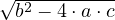

Ruutvõrrandi üldine lahendivalem:
kus ühe lahendi jaoks kasutatakse plussmärki ja teise jaoks miinusmärki. Ruutvõrrandi diskriminandiks nimetatakse väärtust D = . Ruutvõrrandi diskriminandi väärtus määrab ruutvõrrandite lahendite arvu:
Taandatud ruutvõrrandiks nimetatakse ruutvõrrandit, kus ruutliikme kordajaks on üks. Seega on taandatud ruutvõrrand kujul x2 + px + q = 0, kus p ja q on konstandid. Taandatud ruutvõrrandi lahendamiseks saab kasutada lisaks üldisele valemile ka valemit:
Lisaks sellele saab taandatud ruutvõrrandit lahendada Viète’i teoreemi abil.
Viète’i teoreemi kohaselt järgivad ruutvõrrandi lahendid samasusi
ehk lahendite summa peab võrduma lineaarliikme kordaja vastandarvuga ja
lahendite korrutis peab võrduma vabaliikmega.
Näiteks ruutvõrrandi x2 - 5x + 6 lahendid on Viète’i teoreemi kohaselt 2 ja 3,
sest